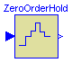
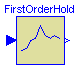
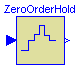
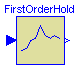

 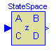
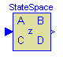
 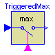
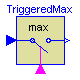
This package contains discrete control blocks with fixed sample period. Every component of this package is structured in the following way:
A sampled data system may consist of components of package Discrete and of every other purely algebraic input/output block, such as the components of packages Modelica.Blocks.Math, Modelica.Blocks.Nonlinear or Modelica.Blocks.Sources.
This package contains the following components:
Sampler Ideal sampling of continuous signals
ZeroOrderHold Zero order hold of a sampled-data system
FirstOrder Discrete-time approximation of first order system
UnitDelay Delay input signal by one sampling period
TransferFunction Discrete-time approximation of transfer function
StateSpace Discrete-time approximation of state space system
TriggeredSampler Triggered sampling of continuous signals
TriggeredMax Compute maximum, absolute value of continuous signal
at trigger instants
This package is not part of the Modelica standard library, because it is planned to realize an improved package with vectorized components (similiar to the Modelica.Blocks.Continuous package) and several different ways to define the sample period. Especially, the sample period may optionally be defined via an outer parameter in a higher level. This features cannot be provided in a satisfactory way in Modelica version 1.3, due to some missing properties of the replaceable attribute.
Release Notes:
Copyright © 2000-2002, DLR.
The Discrete package is free software; it can be redistributed and/or modified under the terms of the Modelica license, see the license conditions and the accompanying disclaimer in the documentation of package Modelica in file "Modelica/package.mo".
ModelicaAdditions.Blocks.Discrete.Sampler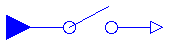
Samples the continues input signals with a sampling rate defined via parameter samplePeriod.
| Name | Default | Description |
|---|---|---|
| n | 1 | Number of inputs (= number of outputs) |
| samplePeriod | 0.1 | Sample period of component [s] |
| startTime | 0 | First sample time instant [s] |
block Sampler "Ideal sampling of continuous signals"
extends Interfaces.DiscreteMIMOs;
equation
when sampleTrigger then
y = u;
end when;
end Sampler;

The output is identical to the sampled input signal at sample time instants and holds the output at the value of the last sample instant during the sample points.
| Name | Default | Description |
|---|---|---|
| n | 1 | Number of inputs (= number of outputs) |
| samplePeriod | 0.1 | Sample period of component [s] |
| startTime | 0 | First sample time instant [s] |
block ZeroOrderHold "Zero order hold of a sampled-data system"
extends Interfaces.DiscreteMIMOs;
protected
Real ySample[n];
equation
when sampleTrigger then
ySample = u;
end when;
/* Define y=ySample with an infinitesimal delay to break potential
algebraic loops if both the continuous and the discrete part have
direct feedthrough
*/
y = pre(ySample);
end ZeroOrderHold;

The output signal is the extrapolation through the values of the last two sampled input signals.
| Name | Default | Description |
|---|---|---|
| n | 1 | Number of inputs (= number of outputs) |
| samplePeriod | 0.1 | Sample period of component [s] |
| startTime | 0 | First sample time instant [s] |
block FirstOrderHold "First order hold of a sampled-data system"
extends Interfaces.DiscreteMIMOs;
protected
Real ySample[n];
Real tSample;
Real c[n];
equation
when sampleTrigger then
ySample = u;
tSample = time;
c = if firstTrigger then zeros(n) else (ySample - pre(ySample))/
samplePeriod;
end when;
/* Use pre(ySample) and pre(c) to break potential algebraic loops by an
infinitesimal delay if both the continuous and the discrete part
have direct feedthrough.
*/
y = pre(ySample) + pre(c)*(time - tSample);
end FirstOrderHold;
ModelicaAdditions.Blocks.Discrete.UnitDelay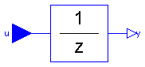
This block describes a unit delay:
1
y = --- * u
z
that is, the output signal y is the input signal u of the previous sample instant. Before the second sample instant, the output y is identical to parameter yStart.
Release Notes:
| Name | Default | Description |
|---|---|---|
| yStart[:] | {0} | Initial values of output signals |
| samplePeriod | 0.1 | Sample period of component [s] |
| startTime | 0 | First sample time instant [s] |
block UnitDelay "Unit Delay Block"
parameter Real yStart[:]={0} "Initial values of output signals";
extends Interfaces.DiscreteMIMOs(
final n=size(yStart, 1),
y(final start=yStart),
outPort(signal(start=yStart)));
protected
Real yTemp[n](start=yStart);
equation
when sampleTrigger then
yTemp = u;
end when;
when sampleTrigger then
y = pre(yTemp);
end when;
end UnitDelay;
ModelicaAdditions.Blocks.Discrete.TransferFunction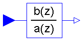
The discrete transfer function block defines the transfer function between the input signal u and the output signal y. The numerator has the order nb-1, the denominator has the order na-1.
b(1)*z^(nb-1) + b(2)*z^(nb-2) + ... + b(nb)
y(z) = -------------------------------------------- * u(z)
a(1)*z^(na-1) + a(2)*z^(na-2) + ... + a(na)
State variables x are defined according to controller canonical form. Initial values of the states can be set as start values of x.
Example:
Blocks.Discrete.TransferFunction g(b = {2,4}, a = {1,3});
results in the following transfer function:
2*z + 4
y = --------- * u
z + 3
Release Notes:
| Name | Default | Description |
|---|---|---|
| b[:] | {1} | Numerator coefficients of transfer function. |
| a[:] | {1,1} | Denominator coefficients of transfer function. |
| samplePeriod | 0.1 | Sample period of component [s] |
| startTime | 0 | First sample time instant [s] |
block TransferFunction "Discrete Transfer Function block"
parameter Real b[:]={1} "Numerator coefficients of transfer function.";
parameter Real a[:]={1,1} "Denominator coefficients of transfer function.";
extends Interfaces.DiscreteSISO;
output Real x[size(a, 1) - 1]
"State of transfer function from controller canonical form";
protected
parameter Integer nb=size(b, 1) "Size of Numerator of transfer function";
parameter Integer na=size(a, 1) "Size of Denominator of transfer function";
Real x1;
Real xext[size(a, 1)];
equation
when sampleTrigger then
/* State variables x are defined according to
controller canonical form. */
x1 = (u - a[2:size(a, 1)]*pre(x))/a[1];
xext = vector([x1; pre(x)]);
x = xext[1:size(x, 1)];
y = vector([zeros(na - nb, 1); b])*xext;
end when;
/* This is a non-sampled equation and above there are two separate
when-clauses. This breaks feeback loops without direct terms,
since in that case y will be independent of x1 (and only dependent
on pre(x)).
*/
/* Corresponding (simpler) version using when-semantics of Modelica 1.3:
equation
when sampleTrigger then
[x; xn] = [x1; pre(x)];
[u] = transpose([a])*[x1; pre(x)];
[y] = transpose([zeros(na - nb, 1); b])*[x1; pre(x)];
end when;
*/
end TransferFunction;

The discrete state space block defines the relation between the input u=inPort.signal and the output y=outPort.signal in state space form:
x = A * pre(x) + B * u
y = C * pre(x) + D * u
where pre(x) is the value of the discrete state x at the previous sample time instant. The input is a vector of length nu, the output is a vector of length ny and nx is the number of states. Accordingly
A has the dimension: A(nx,nx),
B has the dimension: B(nx,nu),
C has the dimension: C(ny,nx),
D has the dimension: D(ny,nu)
Example:
parameter: A = [0.12, 2;3, 1.5]
parameter: B = [2, 7;3, 1]
parameter: C = [0.1, 2]
parameter: D = zeros(ny,nu)
results in the following equations:
[x[1]] [0.12 2.00] [pre(x[1])] [2.0 7.0] [u[1]]
[ ] = [ ]*[ ] + [ ]*[ ]
[x[2]] [3.00 1.50] [pre(x[2])] [0.1 2.0] [u[2]]
[pre(x[1])] [u[1]]
y[1] = [0.1 2.0] * [ ] + [0 0] * [ ]
[pre(x[2])] [u[2]]
| Name | Default | Description |
|---|---|---|
| A[:, size(A, 1)] | [1, 0; 0, 1] | Matrix A of state space model |
| B[size(A, 1), :] | [1; 1] | Matrix B of state space model |
| C[:, size(A, 1)] | [1, 1] | Matrix C of state space model |
| D[size(C, 1), size(B, 2)] | zeros(size(C, 1), size(B, 2)) | Matrix D of state space model |
| samplePeriod | 0.1 | Sample period of component [s] |
| startTime | 0 | First sample time instant [s] |
block StateSpace "Discrete State Space block"
parameter Real A[:, size(A, 1)]=[1, 0; 0, 1] "Matrix A of state space model";
parameter Real B[size(A, 1), :]=[1; 1] "Matrix B of state space model";
parameter Real C[:, size(A, 1)]=[1, 1] "Matrix C of state space model";
parameter Real D[size(C, 1), size(B, 2)]=zeros(size(C, 1), size(B, 2))
"Matrix D of state space model";
extends Interfaces.DiscreteMIMO(final nin=size(B, 2), final nout=size(C, 1));
output Real x[size(A, 1)] "State vector";
equation
when sampleTrigger then
x = A*pre(x) + B*u;
y = C*pre(x) + D*u;
end when;
end StateSpace;
ModelicaAdditions.Blocks.Discrete.TriggeredSampler

Samples the continuous input signals whenever the trigger input signal is rising (i.e., trigger.signal[1] changes from false to true) and provides the sampled input signals as outputs. Before the first sampling, the output signals are equal to their initial values defined via parameter y0.
| Name | Default | Description |
|---|---|---|
| n | 1 | number of input signals (= number output signals) |
| replaceable type SignalType | Real | type of input and output signal |
| y0[n] | zeros(n) | initial values of output signals |
block TriggeredSampler "Triggered sampling of continuous signals"
extends Interfaces.DiscreteBlockIcon;
parameter Integer n=1 "number of input signals (= number output signals)";
replaceable type SignalType = Real "type of input and output signal";
parameter SignalType y0[n]=zeros(n) "initial values of output signals";
Modelica.Blocks.Interfaces.InPort inPort(final n=n, redeclare type
SignalType = SignalType)
"Connector with an input signal of type SignalType";
Modelica.Blocks.Interfaces.OutPort outPort(
final n=n,
redeclare type SignalType = SignalType,
signal(start=y0, fixed=fill(true, n)))
"Connector with an output signal of type SignalType";
Modelica.Blocks.Interfaces.BooleanInPort trigger(final n=1);
equation
when trigger.signal[1] then
outPort.signal = inPort.signal;
end when;
end TriggeredSampler;
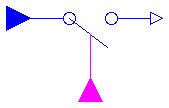
Samples the continuous input signals whenever the trigger input signal is rising (i.e., trigger.signal[1] changes from false to true). The maximum, absolute values of the inputs signals at the sampling point are provided as output signals.
| Name | Default | Description |
|---|---|---|
| n | 1 | number of input signals (= number output signals) |
| replaceable type SignalType | Real | type of input and output signal |
block TriggeredMax
"Compute maximum, absolute value of continuous signal at trigger instants"
extends Interfaces.DiscreteBlockIcon;
parameter Integer n=1 "number of input signals (= number output signals)";
replaceable type SignalType = Real "type of input and output signal";
Modelica.Blocks.Interfaces.InPort inPort(final n=n, redeclare type
SignalType = SignalType)
"Connector with an input signal of type SignalType";
Modelica.Blocks.Interfaces.OutPort outPort(
final n=n,
redeclare type SignalType = SignalType,
signal(each start=0, each fixed=true))
"Connector with an output signal of type SignalType";
Modelica.Blocks.Interfaces.BooleanInPort trigger(final n=1);
equation
when trigger.signal[1] then
for i in 1:n loop
outPort.signal[i] = max(pre(outPort.signal[i]), abs(inPort.signal[i]));
end for;
end when;
end TriggeredMax;